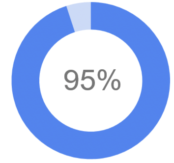
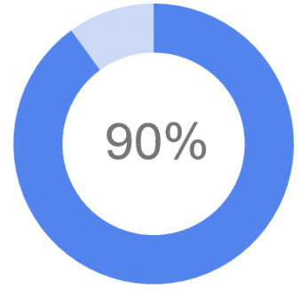
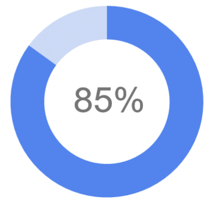

Oluseyi Akinkugbe
Summary
Oluseyi Akinkugbe is a seasoned product manager with over 12 years of experience building successful B2B SaaS and B2C products for web and mobile. But Oluseyi's story goes beyond product roadmaps and user research. He possesses a natural creativity that fuels his passion for design and a desire to explore new digital mediums.
Early Career: Where Design Met Technology
Oluseyi's journey began with graphic design. He honed his skills at Reed Exhibitions, crafting email templates using HTML and CSS. This early experience ignited his interest in how design and technology could work together to create engaging user experiences. He further explored this intersection at Best Buy, where he designed website banners utilizing Flash and XML.
Product Management Expertise
Over the past decade, Oluseyi has led product teams across a diverse range of industries, including Fintech, Energy, and Education. He has a proven track record of success, from integrating a national payments switch for Branch a Neo-bank providing financial services across EMEA, allowing over 1 million customers to transfer funds directly between accounts, to leading the design and development of KYC/KYB and AML applications used by major financial institutions at YouVerify. His skill set encompasses:
- Product Strategy & Roadmapping: Defining clear product vision and roadmap alignment with business goals.
- Customer Focus & User Research: Deep understanding of user needs through research and collaboration.
- Cross-functional Collaboration: Leading & motivating teams with diverse skill sets.
- Data-Driven Decision Making: Leveraging data insights to inform product decisions and improve user experience.
- Agile & Scrum methodologies: Efficient project management techniques for product development.
Education
- 2024 - Ai For Product Management Certification
- 2024 - Product Management Certification
- 2022 - 2022 API Academy - API Designer
- 2021 - 2021 University of Manchester - ICA Certificate in KYC and CDD
- 2013 – 2013 University of Pennsylvania – Gamification (On-line course)
- 2003 - 2005 Thames Valley University - Foundation Degree in Multimedia
- 2001 – 2002 University of Surrey (Guildford) – MSc Information Systems
- 2000 - 2001 South Chelsea College (London) - ACP Computing
- 1997 - 2000 University of Portsmouth – BA Business Administration
Work Experience
-
B2B SaaS Product Manager - SteamaCo
Nov 2023 - Present
- Requirements gathering and data analysis from power utilities
- Conducting product discovery sessions with users
- Planning and executing product training
- Tracking product usage data, funnels and trends in UserPilot
-
B2C Web App Product Manager - Babs.ai
Mar 2023 - Nov. 2023
- Product discovery; user research, interviews and surveys
- Developed product design requirements
- Website optimisations to improve UX and conversion rates
- Writing user personas, user-stories and acceptance criterias
Skills
|  |
 |
|
 |
|
| Product Strategy, Vision & Comms. |
Agile / Scrum Methodologies |
UX, User Research & Insights |
Communication & Collaboration |
Data Driven Product Development |
Awards & Certifications
Others